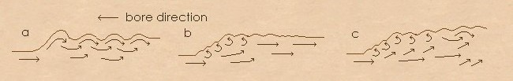

You can think of the impressive front of the bore as a change of
behaviour on the tide's behalf. Tidal waters are being
forced into river water (and the water from the end of the
last tide) travelling in the opposite
direction towards the sea faster than either water can
reverse direction. A mass of water therefore
it builds up. Because it can't push upstream fast
enough, the pressure behind it causes it to change form into one
that can ride over the riverwater and rapidly make up the distance
it has lost (release the pressure behind it). The form largely depends on how deep the
tide is relative to the river water it is overrunning1.
The drawings below show three different forms, with tidal height increasing left to right...

Three types of bore a) Undular jump: river water moves undulates through the bore. b) Weak
jump: river largely flows under the ramp, but in places at the front curls back in turbulence to
give small waves c) Steady Jump: The river leaves the bed in jets which run up through the interior of
the ramp, with much surface turbulence (after Lynch*).
Sites with further information and viewing details for the Severn bore.